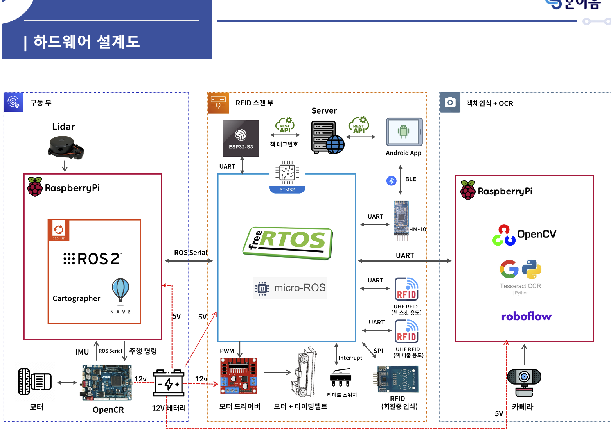
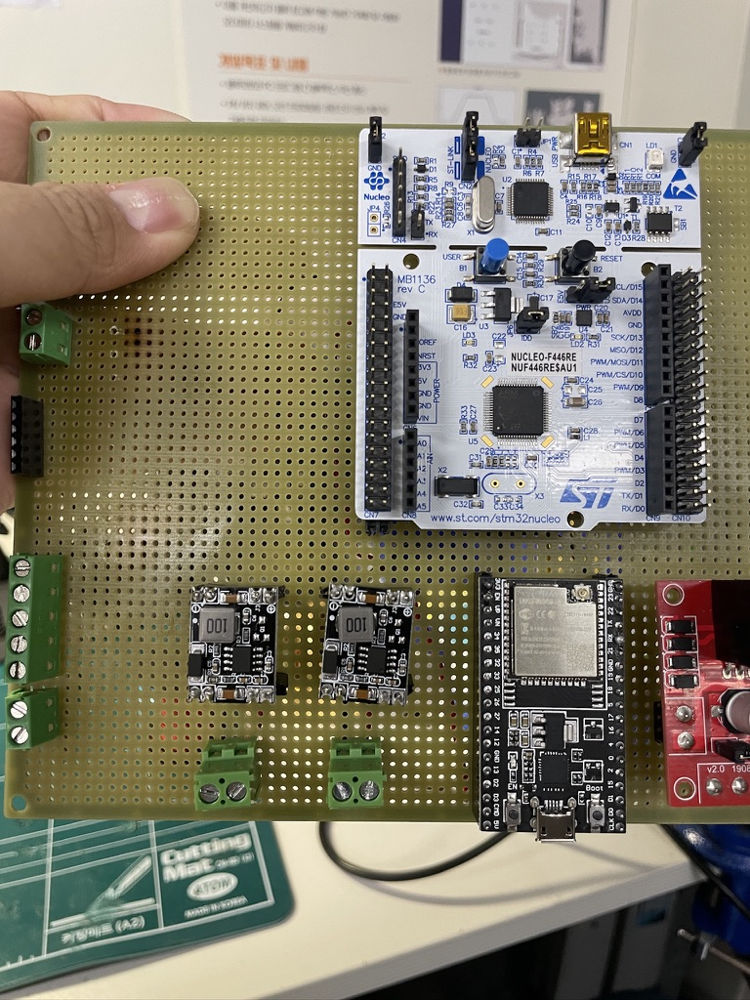
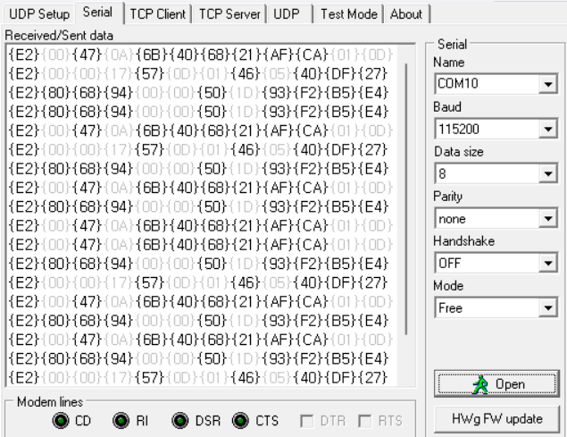
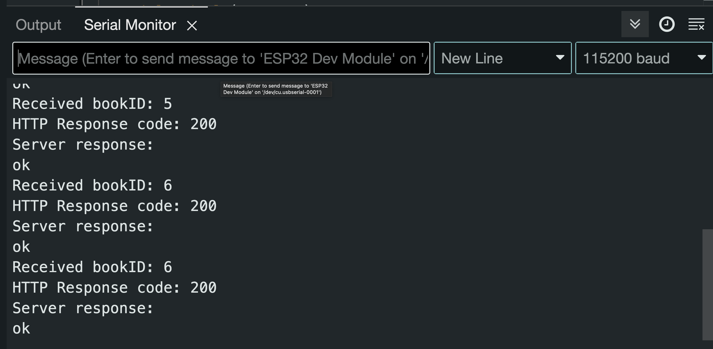

스마트 도서관 로봇 · RFID 통신과 기판 제작
RFID 태그·위치 데이터가 서버와 사용자에게 이어지도록 통신·하드웨어·앱의 접점을 맡았습니다.
팀 수상 · 2024 한국공학대전 총장상 · 캡스톤디자인 지역연계형 우수상 · 한이음 ICT멘토링 공모전 동상
전체 시스템
ROS 2 이동부가 책장에 접근하면 RFID 스캔부가 책 정보를 읽고, 서버와 OCR이 위치·청구기호를 확인합니다. 주행·영상 인식은 팀원 담당입니다.


내가 구현한 핵심 · UART → ESP32 → HTTP
STM32가 보낸 태그·위치 데이터를 UART로 수신해 Wi-Fi/HTTP로 서버에 전달했습니다. RC522 회원카드 인식과 대출·반납 요청도 연결했습니다.
스캔부·대출부 하드웨어 제작
보드·RFID·모터 드라이버·리미트 스위치의 전원과 신호 배선을 구성했습니다. 스캔부와 대출부를 나누어 실물 기판과 외관으로 제작했습니다.
Android 앱 · 장치 정보를 사용자 확인으로
회원증과 대출할 책 정보를 앱에서 확인하는 흐름을 구현했습니다. 센서 수신부터 서버 처리까지 UART 기록과 HTTP 응답으로 구간별 연동을 확인했습니다.
담당 범위: ESP32·RFID 송수신 / 하드웨어 설계·제작 / Android 앱. 수상 실적은 팀 프로젝트 성과입니다.
RFID 인식 범위와 대량 수신 조정
한 번에 많은 태그가 읽히는 상황에서 인식 범위와 통신 속도를 조정하고, 구간별 응답을 확인했습니다.


인식 범위 · 스캔할 책에 맞춰 조정
조치 UHF RFID의 읽기 거리를 스캔 범위에 맞춰 조정했습니다. 센서 자료의 RF 출력 설정 명령을 확인하며 인식 범위를 다뤘습니다.
대량 수신 · 데이터량에 맞춘 통신 속도
문제 한 번에 많은 태그가 읽혀 통신 속도 조정이 필요했습니다. 조치 유입되는 데이터량에 맞춰 속도를 조정하고, ESP32 연동 구간의 수신 데이터를 확인했습니다.
검증 · UART 수신과 HTTP 응답
확인 개인 발표자료에 UART 수신과 서버 HTTP 응답 화면을 남겼습니다. 센서·MCU·서버를 구간별로 확인한 경험입니다.최종 RF 출력·실측 거리와 처리량·유실률의 전후 수치는 별도 기록이 없습니다.